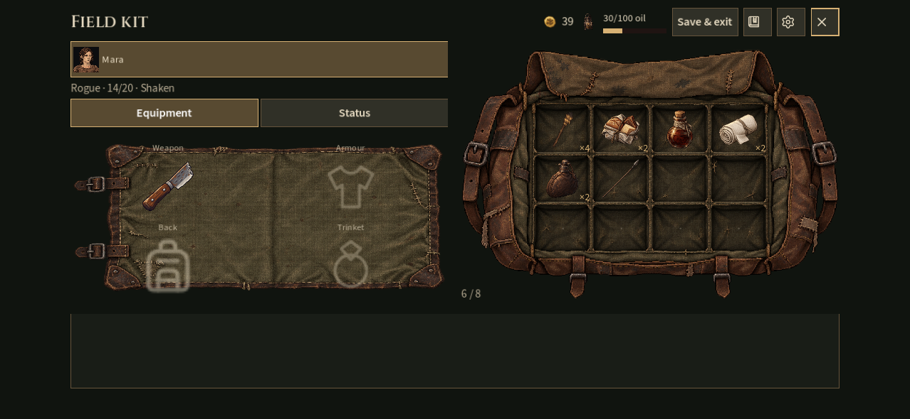

Field kit and combat fog

Actual Godot captures. The in-game views show the real starting party; three-hero and combat views are isolated test fixtures. These are rendered landscape-phone sizes, not physical iPhone tests.
Interface handoff · Fog artwork and source prompt